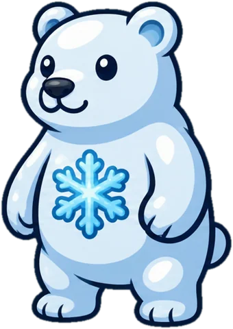

Tap a stage to read its story.
Frostpaw is a chubby upright polar bear cub with thick white fur and a brilliant blue snowflake emblazoned on its chest like a badge of honor. It stands on two legs, paws raised in a fighting stance that it is clearly practicing rather than performing. In the Light Grove it bumbles after beams of sunlight through the trees, trying to catch them between its paws. Each failure is met with a delighted grunt - it has never once treated the attempt as discouraging.
Field note: Frostpaw stands guard over sleeping companions for exactly six minutes before getting distracted and wandering away.
Light Grove. Frostpaw and its family are found in the Light Grove. See everyone who lives there.
Share a Bond Food that matches its types to become friends. Frostpaw loves:
A Bond Food is not a trick. It joins your spirit with the Kimuro's spirit, and only when it chooses you.
Print the Kimuro adventure packs: mazes, cards, a board game and Bond Mark medals.
See the printable packs